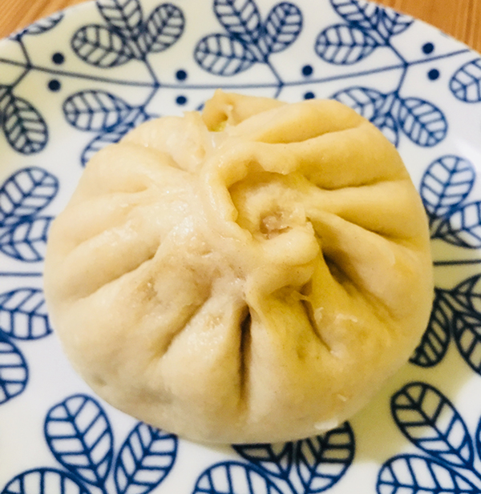

Lian's Family Recipes
- Description
- Material
- Review
Tomato and Egg Stir Fry
Ingredients
- 2 middle size tomatoes
- 2 eggs
- small pinch of salt
- 1/4 cup oil
- 1/8tsp. sugar
- 1/2tsp. soy sauce
- 1 scallion
- two pieces of ginger
Directions
- After washing the tomatoes, blanch them with boiling water, and slice them.
Then beat the eggs into a bowl
- Heat up oil in wok until really hot, stir egg mixture in. When the egg liquid firms, break the egg into small pieces.
Transfer the egg out and leave the oil in.
- Add tomato wedges in, fry until juicy.
- Return egg pieces, add salt, sugar and scallion.
Do a quick stir fry to combine everything well. Serve immediately.
Pork Baozi (Bun)
Ingredients
For the dough
- 500g all-purpose flour
- 5g instant yeast
- 1 spoon white sugar
- 250g warm water
For the fillings
- 500g pork
- shallot
- ginger
- cooking oil
- soy sauce
- salt
Directions
- Mix the yeast, sugar with the water.
Mix well and set aside for around 5 minutes.
Pour the mixed water slowly to the flour and stir with a chop sticker.
Then knead the flour into smooth and soft dough.
Cover the bowl and let the dough rest for around 1 hour or until the paste ball doubles in size.
- Making the filling.
Mix all the ingredients (except the cooked oil), stir clockwise.
Then add cooking oil and continue to stir.
Mix well.
- Roll the dough into strips first.
Divide equal parts into small dough.
Roll the dough into a thin circle.
Fold the circle with some filling like the picture shows.
- Brush some oil on the bottom of each baozi and put into the steamer.
Heat up water in wok and begin to steam.
Count at least 15 minutes after the water in wok begins to boil.
Enjoy your Baozi.

Wood Ear Mushroom Salad
Ingredients
- dried wood ear mushrooms
- a small bunch of coriander
- 2 garlic clove chopped
- olive oil
- Chinese black vinegar
- soy sauce
- sesame oil
- sugar
- toasted sesame seeds
Directions
- Soak the dried wood ear mushrooms in warm water until they absorb the water and become soft.
Rinse in cold water. Tear larger pieces into bite size and remove the sandy ends.
Wash carefully.
- Cook soaked wood ear in boiling water for around 1 to 2 minutes.
Transfer out immediately and soak in cold water to cool down.
- Completely drain the wood ear mushrooms.
- Heat oil in a pot and fry garlic.
Turn off fire and add all the other seasonings.
Mix well and serve.